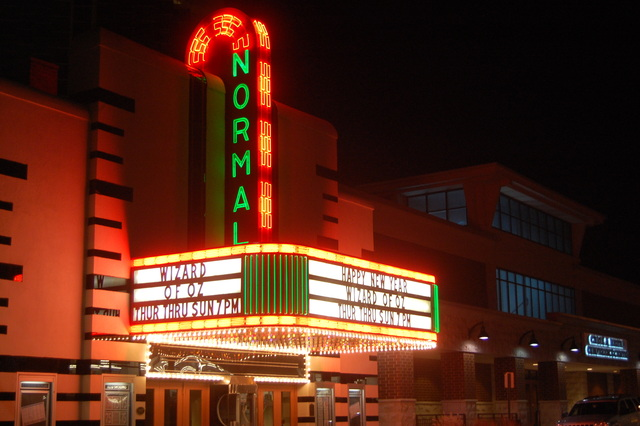
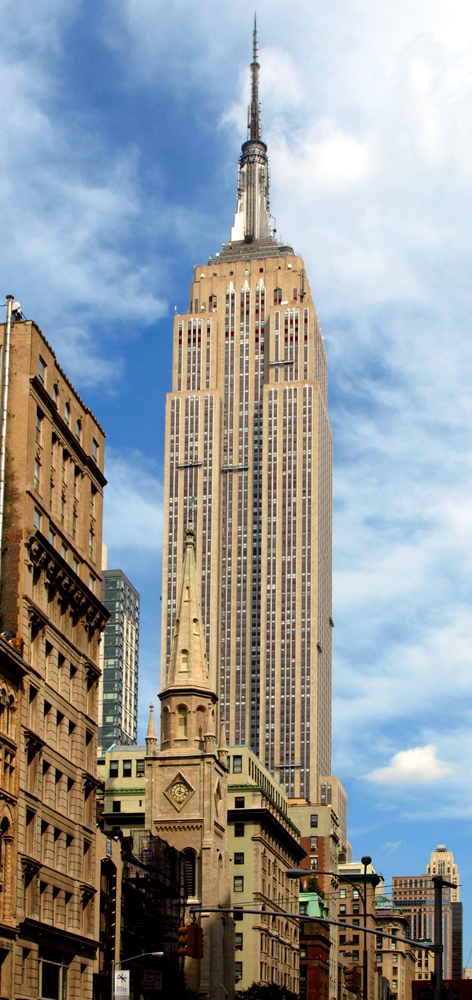
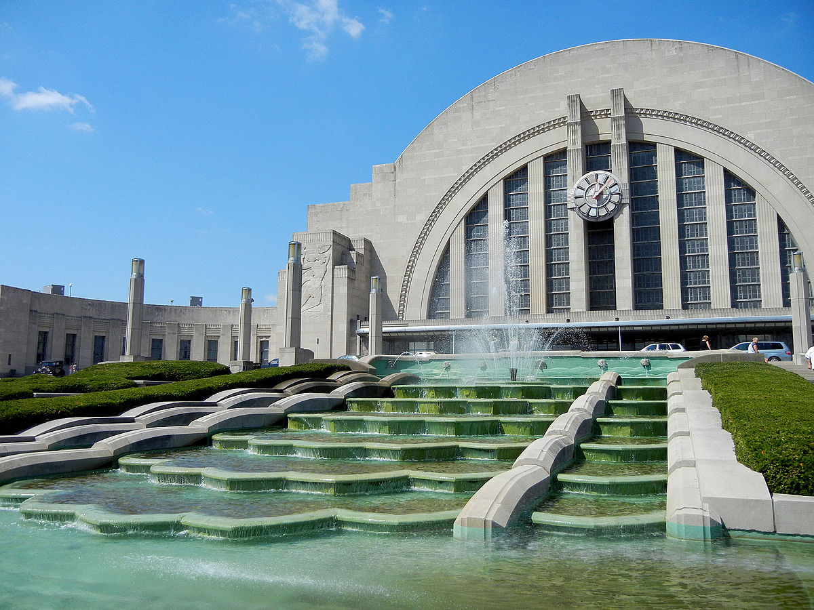

Art-Deco is an illustrious architectural style that was conceived of during the roaring twenties.
This was a time period when wealth, fashion, and technology was spreading to all.
The design of buildings during the time were supposed to reflect the time, the wealth and prosperity america had been facing.
Arhcitects designed many skyscrapers during this time.
Art-Deco was heavily influcened by cubism(a blocky architect style), and combined organic materiels together paired with ancient Egyptian, Native American, Mesoamerican, Japenenese and other cultures designs.
Examples of Art-Deco architecture:
Arthur F. Moratz's Normal Theater
Lamb & Harmon's Empire State Building
Fellheimer & Wagner's Union Terminal